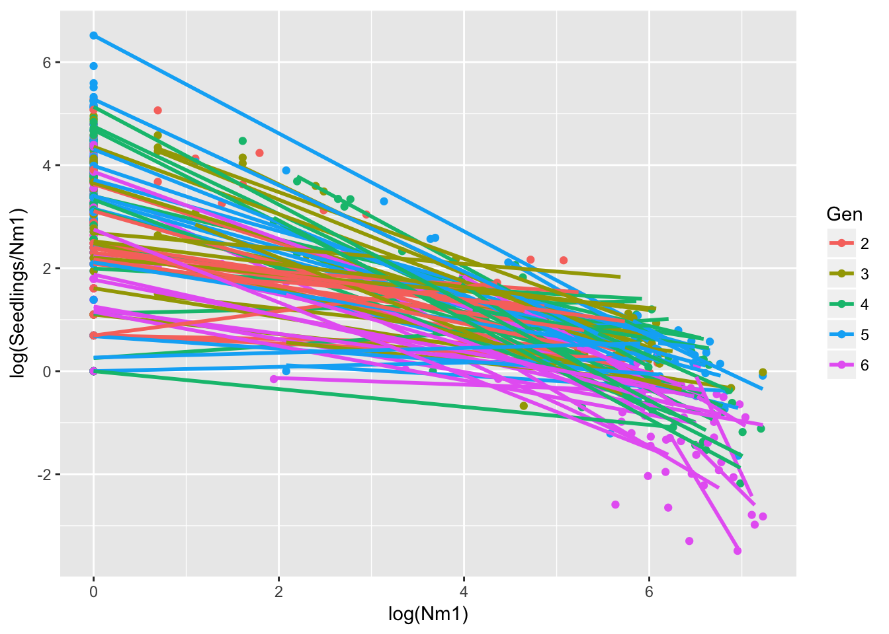
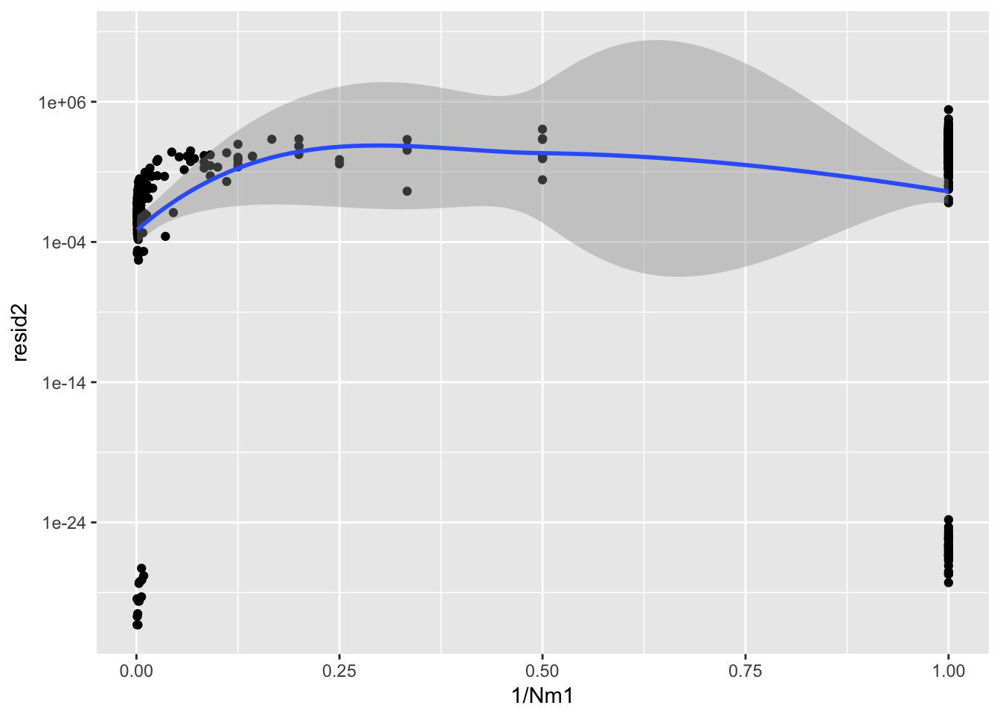
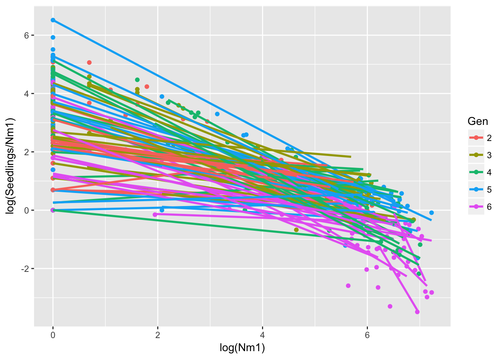
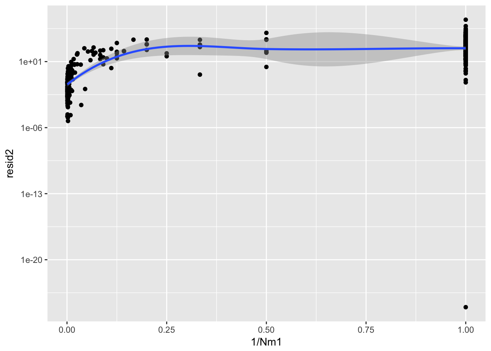

18 5 June 2017
18.1 More on stochasticity in Ler seed production
Some observations on stochasticity in Ler seed production:
- Seed number is uncorrelated with silique number, so the latter is not a useful measure
- Variability in seed production is hierarchically structured:
- Among generations (reflecting, perhaps, season or other greenhouse-wide effects)
- Among runways within a generation (reflecting, perhaps, spatial variation in greenhouse conditions; this is the best we can do without a map of runway locations)
- Among pots within a runway (this remains to be parsed between differences among pots and differences among individuals)
Some things that I still need to do:
- Re-analyze treatment B using log(seedling number) as the response variable
- Re-run the DD model using random effects for generation and rep within generation
- Regress residuals on \(1/N\); the intercept should give the amount of the among-pot variation that is due to “environmental stochasticity.” However, maybe this should be residuals from a model of \(\lambda\) rather than \(\log \lambda\)?
Let’s start by just adding treatment B into the density dependence analysis. In order to get a good sample size we’ll use both landscapes 1p and 2p.
seed_data <- group_by(popLer, ID, Pot) %>%
mutate(Nm1 = 1 + (Treatment == "C") * (lag(Seedlings) - 1))
#seed_data$Nm1 <- lag(popLer$Seedlings)
seed_data <- subset(seed_data,
Treatment %in% c("B", "C") & Generation > 1 & Gap %in% c("1p", "2p"))
seed_data$GenID <- with(seed_data, interaction(Gen, ID))
seed_data$Nm1[is.na(seed_data$Nm1)] <- 1
seed_data$ID <- as.factor(seed_data$ID)
DD.lm <- lm(log(Seedlings/Nm1) ~ log(Nm1) + Gen * ID, data = seed_data)
anova(DD.lm)Analysis of Variance Table
Response: log(Seedlings/Nm1)
Df Sum Sq Mean Sq F value Pr(>F)
log(Nm1) 1 1197.23 1197.23 792.6968 < 2.2e-16 ***
Gen 4 85.65 21.41 14.1779 9.618e-11 ***
ID 39 56.53 1.45 0.9597 0.5426
Gen:ID 156 196.33 1.26 0.8333 0.9043
Residuals 354 534.66 1.51
---
Signif. codes: 0 '***' 0.001 '**' 0.01 '*' 0.05 '.' 0.1 ' ' 1summary(DD.lm)
Call:
lm(formula = log(Seedlings/Nm1) ~ log(Nm1) + Gen * ID, data = seed_data)
Residuals:
Min 1Q Median 3Q Max
-3.4725 -0.4679 0.0000 0.6050 2.6645
Coefficients:
Estimate Std. Error t value Pr(>|t|)
(Intercept) 1.78599 0.87309 2.046 0.0415 *
log(Nm1) -0.43660 0.03108 -14.049 <2e-16 ***
Gen3 1.30529 1.22910 1.062 0.2890
Gen4 1.20304 1.12203 1.072 0.2844
Gen5 0.15684 1.12384 0.140 0.8891
Gen6 0.65412 1.06459 0.614 0.5393
ID2 0.89140 1.50799 0.591 0.5548
ID3 2.43909 1.50644 1.619 0.1063
ID8 0.82874 1.12189 0.739 0.4606
ID10 1.07306 1.22904 0.873 0.3832
ID12 1.55370 1.06446 1.460 0.1453
ID14 0.70985 1.22899 0.578 0.5639
ID16 -0.03284 1.22898 -0.027 0.9787
ID20 1.17331 1.12207 1.046 0.2964
ID24 2.58161 1.50694 1.713 0.0876 .
ID30 1.49876 1.50685 0.995 0.3206
ID37 0.94599 1.22899 0.770 0.4420
ID43 0.91479 1.02872 0.889 0.3745
ID45 1.42381 1.50777 0.944 0.3457
ID58 0.81804 1.12246 0.729 0.4666
ID64 0.37098 1.22907 0.302 0.7630
ID65 1.12223 1.50696 0.745 0.4569
ID68 0.77756 1.12198 0.693 0.4887
ID69 0.78757 1.22896 0.641 0.5220
ID72 1.00936 1.06444 0.948 0.3436
ID73 1.50985 1.50752 1.002 0.3172
ID74 2.16526 1.50752 1.436 0.1518
ID75 2.02068 1.50752 1.340 0.1810
ID78 3.28919 1.50752 2.182 0.0298 *
ID80 3.00980 1.50752 1.997 0.0466 *
ID83 0.12833 1.23185 0.104 0.9171
ID85 0.63815 1.12505 0.567 0.5709
ID87 0.61191 1.50752 0.406 0.6851
ID89 2.78873 1.50752 1.850 0.0652 .
ID90 1.55632 1.23185 1.263 0.2073
ID92 0.85246 1.12505 0.758 0.4491
ID97 0.73894 1.23185 0.600 0.5490
ID98 1.46316 1.23185 1.188 0.2357
ID100 -0.03773 1.23185 -0.031 0.9756
ID101 -0.90630 1.12505 -0.806 0.4210
ID104 2.90279 1.23185 2.356 0.0190 *
ID105 2.88684 1.50752 1.915 0.0563 .
ID106 0.08285 1.23185 0.067 0.9464
ID110 1.10439 1.50752 0.733 0.4643
ID112 0.46555 1.12505 0.414 0.6793
Gen3:ID2 -2.16031 1.94593 -1.110 0.2677
Gen4:ID2 -1.65507 1.81315 -0.913 0.3620
Gen5:ID2 -0.43102 1.78112 -0.242 0.8089
Gen6:ID2 -1.32984 1.73986 -0.764 0.4452
Gen3:ID3 -3.38632 1.94402 -1.742 0.0824 .
Gen4:ID3 -1.98500 1.81076 -1.096 0.2737
Gen5:ID3 -1.38528 1.77649 -0.780 0.4360
Gen6:ID3 -2.98502 1.73805 -1.717 0.0868 .
Gen3:ID8 -1.33328 1.58682 -0.840 0.4013
Gen4:ID8 -1.11609 1.50610 -0.741 0.4592
Gen5:ID8 0.74749 1.50533 0.497 0.6198
Gen6:ID8 -2.72659 1.46619 -1.860 0.0638 .
Gen3:ID10 -1.07110 1.73845 -0.616 0.5382
Gen4:ID10 -1.78773 1.58675 -1.127 0.2606
Gen5:ID10 1.28495 1.58657 0.810 0.4185
Gen6:ID10 -1.29988 1.55062 -0.838 0.4024
Gen3:ID12 -1.21135 1.50620 -0.804 0.4218
Gen4:ID12 -1.90996 1.39370 -1.370 0.1714
Gen5:ID12 -0.50411 1.37402 -0.367 0.7139
Gen6:ID12 -2.52657 1.32983 -1.900 0.0583 .
Gen3:ID14 -0.70204 1.73810 -0.404 0.6865
Gen4:ID14 -0.07674 1.54663 -0.050 0.9605
Gen5:ID14 0.50740 1.54640 0.328 0.7430
Gen6:ID14 -1.09967 1.48022 -0.743 0.4580
Gen3:ID16 0.74469 1.73801 0.428 0.6686
Gen4:ID16 -0.28106 1.54655 -0.182 0.8559
Gen5:ID16 1.21610 1.54660 0.786 0.4322
Gen6:ID16 0.22965 1.50619 0.152 0.8789
Gen3:ID20 -0.97470 1.54646 -0.630 0.5289
Gen4:ID20 -1.13200 1.46463 -0.773 0.4401
Gen5:ID20 0.36067 1.41910 0.254 0.7995
Gen6:ID20 -1.78062 1.36232 -1.307 0.1920
Gen3:ID24 -2.53815 2.12916 -1.192 0.2340
Gen4:ID24 -3.53938 2.06919 -1.711 0.0880 .
Gen5:ID24 -3.06753 1.88171 -1.630 0.1040
Gen6:ID24 -1.83600 1.84533 -0.995 0.3204
Gen3:ID30 -1.77556 2.12867 -0.834 0.4048
Gen4:ID30 -3.66532 1.87884 -1.951 0.0519 .
Gen5:ID30 0.13060 1.88262 0.069 0.9447
Gen6:ID30 -0.96734 1.84359 -0.525 0.6001
Gen3:ID37 -2.06866 1.73832 -1.190 0.2348
Gen4:ID37 -0.97963 1.58658 -0.617 0.5373
Gen5:ID37 0.30129 1.54681 0.195 0.8457
Gen6:ID37 -1.37315 1.48010 -0.928 0.3542
Gen3:ID43 -0.44298 1.45474 -0.305 0.7609
Gen4:ID43 -0.70395 1.36878 -0.514 0.6074
Gen5:ID43 0.30094 1.36712 0.220 0.8259
Gen6:ID43 -2.30305 1.32457 -1.739 0.0830 .
Gen3:ID45 -2.05370 1.88148 -1.092 0.2758
Gen4:ID45 -0.45029 1.81065 -0.249 0.8037
Gen5:ID45 -1.26464 1.77661 -0.712 0.4770
Gen6:ID45 -2.32672 1.71811 -1.354 0.1765
Gen3:ID58 0.12857 1.58711 0.081 0.9355
Gen4:ID58 -0.88546 1.50992 -0.586 0.5580
Gen5:ID58 0.49525 1.50735 0.329 0.7427
Gen6:ID58 -1.54672 1.46931 -1.053 0.2932
Gen3:ID64 -0.63984 1.66409 -0.385 0.7008
Gen4:ID64 -0.58730 1.58711 -0.370 0.7116
Gen5:ID64 1.15752 1.52230 0.760 0.4475
Gen6:ID64 -0.78092 1.48146 -0.527 0.5984
Gen3:ID65 -0.57220 2.12861 -0.269 0.7882
Gen4:ID65 -1.71717 2.06898 -0.830 0.4071
Gen5:ID65 -0.15346 2.06885 -0.074 0.9409
Gen6:ID65 -1.07533 2.03807 -0.528 0.5981
Gen3:ID68 -1.29369 1.58687 -0.815 0.4155
Gen4:ID68 -0.91634 1.50632 -0.608 0.5434
Gen5:ID68 0.01161 1.46276 0.008 0.9937
Gen6:ID68 -1.04929 1.42049 -0.739 0.4606
Gen3:ID69 -0.42327 1.66409 -0.254 0.7994
Gen4:ID69 -1.54499 1.58753 -0.973 0.3311
Gen5:ID69 1.04075 1.54669 0.673 0.5015
Gen6:ID69 -1.03891 1.48042 -0.702 0.4833
Gen3:ID72 -1.00478 1.46275 -0.687 0.4926
Gen4:ID72 -1.22906 1.37521 -0.894 0.3721
Gen5:ID72 -0.46668 1.36089 -0.343 0.7319
Gen6:ID72 -2.07704 1.31545 -1.579 0.1152
Gen3:ID73 -0.64989 2.12869 -0.305 0.7603
Gen4:ID73 -1.60851 2.06872 -0.778 0.4374
Gen5:ID73 2.13831 2.06970 1.033 0.3022
Gen6:ID73 -1.03255 1.84359 -0.560 0.5758
Gen3:ID74 -1.88924 2.12869 -0.888 0.3754
Gen4:ID74 -1.28657 1.87735 -0.685 0.4936
Gen5:ID74 0.39603 1.87843 0.211 0.8331
Gen6:ID74 -1.88424 1.77401 -1.062 0.2889
Gen3:ID75 -0.75525 2.12869 -0.355 0.7230
Gen4:ID75 -0.67897 2.06872 -0.328 0.7429
Gen5:ID75 -0.96777 2.06970 -0.468 0.6404
Gen6:ID75 -2.32245 1.84359 -1.260 0.2086
Gen3:ID78 -3.54725 2.12869 -1.666 0.0965 .
Gen4:ID78 -3.88032 2.06872 -1.876 0.0615 .
Gen5:ID78 -3.18899 1.81019 -1.762 0.0790 .
Gen6:ID78 -2.15341 1.77401 -1.214 0.2256
Gen3:ID80 -3.85118 1.94324 -1.982 0.0483 *
Gen4:ID80 -1.92144 1.87735 -1.023 0.3068
Gen5:ID80 -1.06104 1.81019 -0.586 0.5581
Gen6:ID80 -1.60978 1.77401 -0.907 0.3648
Gen3:ID83 0.66062 1.73810 0.380 0.7041
Gen4:ID83 1.41472 1.66411 0.850 0.3958
Gen5:ID83 1.00308 1.66533 0.602 0.5473
Gen6:ID83 -0.16410 1.54659 -0.106 0.9156
Gen3:ID85 -0.03199 1.58668 -0.020 0.9839
Gen4:ID85 0.56258 1.50527 0.374 0.7088
Gen5:ID85 0.33365 1.50662 0.221 0.8249
Gen6:ID85 -0.01573 1.46295 -0.011 0.9914
Gen3:ID87 0.01038 2.12869 0.005 0.9961
Gen4:ID87 -0.65650 2.06872 -0.317 0.7512
Gen5:ID87 -0.53321 1.87843 -0.284 0.7767
Gen6:ID87 -1.26026 1.84359 -0.684 0.4947
Gen3:ID89 -2.02986 2.12869 -0.954 0.3410
Gen4:ID89 -1.92760 2.06872 -0.932 0.3521
Gen5:ID89 -1.78711 2.06970 -0.863 0.3885
Gen6:ID89 -2.18431 2.03814 -1.072 0.2846
Gen3:ID90 -1.08191 1.66412 -0.650 0.5160
Gen4:ID90 -1.99026 1.54651 -1.287 0.1990
Gen5:ID90 0.58267 1.52323 0.383 0.7023
Gen6:ID90 -1.52391 1.46295 -1.042 0.2983
Gen3:ID92 -0.59698 1.58668 -0.376 0.7070
Gen4:ID92 -0.41567 1.50527 -0.276 0.7826
Gen5:ID92 2.20921 1.46425 1.509 0.1323
Gen6:ID92 -0.78100 1.39243 -0.561 0.5752
Gen3:ID97 -0.52622 1.73810 -0.303 0.7623
Gen4:ID97 0.43335 1.66411 0.260 0.7947
Gen5:ID97 0.94320 1.66533 0.566 0.5715
Gen6:ID97 0.27881 1.62594 0.171 0.8639
Gen3:ID98 -0.90303 1.66412 -0.543 0.5877
Gen4:ID98 -1.95525 1.54651 -1.264 0.2070
Gen5:ID98 -1.10618 1.54782 -0.715 0.4753
Gen6:ID98 -1.95746 1.50536 -1.300 0.1943
Gen3:ID100 0.84551 1.73810 0.486 0.6269
Gen4:ID100 0.64140 1.66411 0.385 0.7002
Gen5:ID100 1.58727 1.66533 0.953 0.3412
Gen6:ID100 0.69073 1.62594 0.425 0.6712
Gen3:ID101 1.86031 1.58668 1.172 0.2418
Gen4:ID101 1.93286 1.50527 1.284 0.2000
Gen5:ID101 2.29557 1.50662 1.524 0.1285
Gen6:ID101 1.82846 1.46295 1.250 0.2122
Gen3:ID104 -1.85765 1.73810 -1.069 0.2859
Gen4:ID104 -3.17278 1.66411 -1.907 0.0574 .
Gen5:ID104 -1.99215 1.54782 -1.287 0.1989
Gen6:ID104 -2.98978 1.50536 -1.986 0.0478 *
Gen3:ID105 -1.02229 2.12869 -0.480 0.6313
Gen4:ID105 -2.09168 2.06872 -1.011 0.3127
Gen5:ID105 -0.34103 2.06970 -0.165 0.8692
Gen6:ID105 -0.98315 2.03814 -0.482 0.6298
Gen3:ID106 -0.41737 1.66412 -0.251 0.8021
Gen4:ID106 0.54158 1.58668 0.341 0.7331
Gen5:ID106 1.44681 1.54782 0.935 0.3506
Gen6:ID106 -0.34875 1.50536 -0.232 0.8169
Gen3:ID110 -0.66930 2.12869 -0.314 0.7534
Gen4:ID110 -0.61371 1.87735 -0.327 0.7439
Gen5:ID110 0.68361 1.87843 0.364 0.7161
Gen6:ID110 -0.87094 1.84359 -0.472 0.6369
Gen3:ID112 -0.09026 1.58668 -0.057 0.9547
Gen4:ID112 -0.06853 1.50527 -0.046 0.9637
Gen5:ID112 1.11058 1.46425 0.758 0.4487
Gen6:ID112 -0.39053 1.41929 -0.275 0.7834
---
Signif. codes: 0 '***' 0.001 '**' 0.01 '*' 0.05 '.' 0.1 ' ' 1
Residual standard error: 1.229 on 354 degrees of freedom
Multiple R-squared: 0.7418, Adjusted R-squared: 0.5959
F-statistic: 5.084 on 200 and 354 DF, p-value: < 2.2e-16ggplot(aes(log(Nm1), log(Seedlings/Nm1), group = GenID, color = Gen), data = seed_data) +
geom_point() + geom_smooth(method = "lm", se = FALSE)
All right, now let’s try with glm and quasi-poisson:
DD.glm <- glm(Seedlings ~ log(Nm1) + Gen * ID, data = seed_data, family = quasipoisson)
car::Anova(DD.glm) Analysis of Deviance Table (Type II tests)
Response: Seedlings
LR Chisq Df Pr(>Chisq)
log(Nm1) 431.29 1 < 2.2e-16 ***
Gen 192.69 4 < 2.2e-16 ***
ID 78.50 39 0.0001811 ***
Gen:ID 223.80 156 0.0003043 ***
---
Signif. codes: 0 '***' 0.001 '**' 0.01 '*' 0.05 '.' 0.1 ' ' 1summary(DD.glm)
Call:
glm(formula = Seedlings ~ log(Nm1) + Gen * ID, family = quasipoisson,
data = seed_data)
Deviance Residuals:
Min 1Q Median 3Q Max
-25.346 -5.058 0.000 2.938 31.110
Coefficients:
Estimate Std. Error t value Pr(>|t|)
(Intercept) 4.043179 0.451232 8.960 < 2e-16 ***
log(Nm1) 0.320337 0.017984 17.812 < 2e-16 ***
Gen3 0.508582 0.544455 0.934 0.350883
Gen4 0.553890 0.509055 1.088 0.277302
Gen5 -0.190163 0.539657 -0.352 0.724765
Gen6 -0.182980 0.540954 -0.338 0.735373
ID2 0.017309 0.637472 0.027 0.978353
ID3 1.328772 0.523153 2.540 0.011514 *
ID8 0.247817 0.550162 0.450 0.652666
ID10 0.114426 0.648556 0.176 0.860056
ID12 0.318970 0.538649 0.592 0.554118
ID14 -0.098951 0.618344 -0.160 0.872953
ID16 0.072229 0.597492 0.121 0.903850
ID20 -0.183721 0.628544 -0.292 0.770231
ID24 1.557990 0.501370 3.107 0.002040 **
ID30 0.461067 0.602790 0.765 0.444848
ID37 0.350891 0.598379 0.586 0.557979
ID43 0.396803 0.528499 0.751 0.453265
ID45 0.520991 0.573021 0.909 0.363863
ID58 0.065428 0.623718 0.105 0.916514
ID64 0.419852 0.607499 0.691 0.489946
ID65 0.101626 0.655837 0.155 0.876944
ID68 -0.108707 0.616558 -0.176 0.860150
ID69 -0.160725 0.664430 -0.242 0.808998
ID72 0.275853 0.537597 0.513 0.608186
ID73 -0.747343 1.728171 -0.432 0.665680
ID74 -0.091936 1.283982 -0.072 0.942959
ID75 -0.236517 1.368718 -0.173 0.862906
ID78 1.031994 0.820509 1.258 0.209312
ID80 0.752611 0.908076 0.829 0.407778
ID83 -1.517451 1.791424 -0.847 0.397532
ID85 -0.251443 0.876600 -0.287 0.774404
ID87 -1.645284 2.652267 -0.620 0.535439
ID89 0.531531 0.989065 0.537 0.591323
ID90 0.369619 0.811782 0.455 0.649160
ID92 -0.379618 0.919689 -0.413 0.680027
ID97 -0.728993 1.252908 -0.582 0.561044
ID98 -0.225467 1.014555 -0.222 0.824261
ID100 -2.097269 2.360245 -0.889 0.374832
ID101 -2.369203 2.213498 -1.070 0.285194
ID104 0.812749 0.704261 1.154 0.249260
ID105 0.629649 0.951763 0.662 0.508683
ID106 -0.975127 1.396775 -0.698 0.485556
ID110 -1.152808 2.092381 -0.551 0.582012
ID112 -1.014657 1.189767 -0.853 0.394335
Gen3:ID2 -0.725818 0.847518 -0.856 0.392353
Gen4:ID2 0.188788 0.733663 0.257 0.797080
Gen5:ID2 0.048529 0.777082 0.062 0.950240
Gen6:ID2 -0.418015 0.800906 -0.522 0.602047
Gen3:ID3 -1.626290 0.692556 -2.348 0.019412 *
Gen4:ID3 -1.126329 0.626939 -1.797 0.073259 .
Gen5:ID3 -0.842500 0.648192 -1.300 0.194526
Gen6:ID3 -1.350227 0.662340 -2.039 0.042236 *
Gen3:ID8 -0.366896 0.682695 -0.537 0.591314
Gen4:ID8 -0.934527 0.673860 -1.387 0.166367
Gen5:ID8 0.763515 0.655545 1.165 0.244923
Gen6:ID8 -1.804249 0.837205 -2.155 0.031829 *
Gen3:ID10 -0.419608 0.803372 -0.522 0.601782
Gen4:ID10 -0.094649 0.735702 -0.129 0.897706
Gen5:ID10 1.060966 0.737561 1.438 0.151182
Gen6:ID10 0.020512 0.755992 0.027 0.978369
Gen3:ID12 -0.378844 0.658266 -0.576 0.565307
Gen4:ID12 -0.958024 0.635016 -1.509 0.132277
Gen5:ID12 0.357942 0.641027 0.558 0.576933
Gen6:ID12 -1.262101 0.701813 -1.798 0.072974 .
Gen3:ID14 0.121812 0.754102 0.162 0.871766
Gen4:ID14 -0.512795 0.736078 -0.697 0.486474
Gen5:ID14 0.780078 0.717626 1.087 0.277765
Gen6:ID14 -0.045252 0.735141 -0.062 0.950952
Gen3:ID16 -0.061494 0.741496 -0.083 0.933952
Gen4:ID16 -1.202151 0.759309 -1.583 0.114265
Gen5:ID16 0.342530 0.717455 0.477 0.633355
Gen6:ID16 0.100265 0.712884 0.141 0.888229
Gen3:ID20 -0.151832 0.760273 -0.200 0.841824
Gen4:ID20 0.257355 0.700666 0.367 0.713614
Gen5:ID20 1.222094 0.712657 1.715 0.087249 .
Gen6:ID20 0.079012 0.729305 0.108 0.913788
Gen3:ID24 -1.218430 0.638428 -1.908 0.057137 .
Gen4:ID24 -2.372220 0.695935 -3.409 0.000728 ***
Gen5:ID24 -1.147753 0.690829 -1.661 0.097516 .
Gen6:ID24 -1.393997 0.709023 -1.966 0.050070 .
Gen3:ID30 -0.712891 0.779117 -0.915 0.360815
Gen4:ID30 -2.012935 0.922025 -2.183 0.029680 *
Gen5:ID30 0.041165 0.783026 0.053 0.958103
Gen6:ID30 -0.181481 0.756519 -0.240 0.810554
Gen3:ID37 -1.148642 0.807422 -1.423 0.155732
Gen4:ID37 -0.211171 0.697251 -0.303 0.762172
Gen5:ID37 0.222909 0.709411 0.314 0.753541
Gen6:ID37 -0.468397 0.726377 -0.645 0.519449
Gen3:ID43 -0.394548 0.645279 -0.611 0.541301
Gen4:ID43 -0.235858 0.602237 -0.392 0.695563
Gen5:ID43 0.460569 0.625507 0.736 0.462028
Gen6:ID43 -1.422365 0.692022 -2.055 0.040576 *
Gen3:ID45 -1.286955 0.777725 -1.655 0.098857 .
Gen4:ID45 -0.415576 0.672081 -0.618 0.536748
Gen5:ID45 -0.282137 0.693140 -0.407 0.684223
Gen6:ID45 -1.031474 0.734838 -1.404 0.161292
Gen3:ID58 0.312379 0.732627 0.426 0.670088
Gen4:ID58 -0.298223 0.705544 -0.423 0.672782
Gen5:ID58 0.897457 0.714474 1.256 0.209905
Gen6:ID58 -0.269180 0.748447 -0.360 0.719322
Gen3:ID64 -0.025388 0.725404 -0.035 0.972101
Gen4:ID64 -1.448796 0.752154 -1.926 0.054880 .
Gen5:ID64 -0.005864 0.723116 -0.008 0.993534
Gen6:ID64 -0.960080 0.750582 -1.279 0.201695
Gen3:ID65 0.391479 0.778362 0.503 0.615310
Gen4:ID65 -0.628793 0.796096 -0.790 0.430147
Gen5:ID65 0.483003 0.801865 0.602 0.547327
Gen6:ID65 0.092653 0.831419 0.111 0.911331
Gen3:ID68 -0.650878 0.787310 -0.827 0.408957
Gen4:ID68 -0.517148 0.735852 -0.703 0.482650
Gen5:ID68 0.511472 0.728950 0.702 0.483355
Gen6:ID68 -0.089564 0.748860 -0.120 0.904867
Gen3:ID69 0.678626 0.769246 0.882 0.378269
Gen4:ID69 -1.151739 0.812405 -1.418 0.157161
Gen5:ID69 0.913132 0.763121 1.197 0.232273
Gen6:ID69 0.041416 0.775749 0.053 0.957452
Gen3:ID72 -0.107015 0.650276 -0.165 0.869378
Gen4:ID72 -1.128138 0.636728 -1.772 0.077292 .
Gen5:ID72 0.059203 0.644784 0.092 0.926895
Gen6:ID72 -1.197553 0.694305 -1.725 0.085432 .
Gen3:ID73 0.146825 2.127063 0.069 0.945007
Gen4:ID73 -0.959355 2.686363 -0.357 0.721214
Gen5:ID73 2.485313 1.831548 1.357 0.175663
Gen6:ID73 1.347287 1.873472 0.719 0.472530
Gen3:ID74 -1.092530 2.081458 -0.525 0.599990
Gen4:ID74 -0.462082 1.537290 -0.301 0.763909
Gen5:ID74 0.744269 1.466755 0.507 0.612172
Gen6:ID74 -0.412529 1.615968 -0.255 0.798653
Gen3:ID75 0.041464 1.711591 0.024 0.980686
Gen4:ID75 -0.029819 1.708098 -0.017 0.986081
Gen5:ID75 -0.620767 2.391236 -0.260 0.795322
Gen6:ID75 -1.225788 2.319023 -0.529 0.597428
Gen3:ID78 -2.750542 2.277292 -1.208 0.227926
Gen4:ID78 -3.231168 2.749486 -1.175 0.240709
Gen5:ID78 -1.872749 1.411594 -1.327 0.185466
Gen6:ID78 -1.308675 1.207476 -1.084 0.279186
Gen3:ID80 -2.147372 1.586228 -1.354 0.176677
Gen4:ID80 -1.272143 1.231628 -1.033 0.302358
Gen5:ID80 0.145085 1.062433 0.137 0.891457
Gen6:ID80 -0.720991 1.193641 -0.604 0.546213
Gen3:ID83 0.847253 2.019075 0.420 0.675014
Gen4:ID83 1.695294 1.892558 0.896 0.370985
Gen5:ID83 0.755477 2.237085 0.338 0.735785
Gen6:ID83 0.977479 2.050248 0.477 0.633826
Gen3:ID85 -0.539119 1.201553 -0.449 0.653934
Gen4:ID85 -0.111520 1.089472 -0.102 0.918527
Gen5:ID85 -0.330739 1.344317 -0.246 0.805804
Gen6:ID85 -0.532982 1.418961 -0.376 0.707428
Gen3:ID87 0.807095 2.993330 0.270 0.787601
Gen4:ID87 -0.007346 3.323370 -0.002 0.998238
Gen5:ID87 1.159563 2.901308 0.400 0.689641
Gen6:ID87 -0.343113 3.592151 -0.096 0.923958
Gen3:ID89 -1.233145 1.633951 -0.755 0.450930
Gen4:ID89 -1.278453 1.622498 -0.788 0.431251
Gen5:ID89 -1.440109 2.240671 -0.643 0.520826
Gen6:ID89 -1.347209 2.155311 -0.625 0.532331
Gen3:ID90 -1.232501 1.173873 -1.050 0.294460
Gen4:ID90 -2.327631 1.433981 -1.623 0.105438
Gen5:ID90 -0.063752 0.990668 -0.064 0.948725
Gen6:ID90 -1.339447 1.201562 -1.115 0.265712
Gen3:ID92 -0.782119 1.335260 -0.586 0.558421
Gen4:ID92 -0.710894 1.285595 -0.553 0.580634
Gen5:ID92 1.566795 1.027148 1.525 0.128056
Gen6:ID92 -0.261706 1.239341 -0.211 0.832880
Gen3:ID97 -0.267420 1.654094 -0.162 0.871657
Gen4:ID97 0.380419 1.470381 0.259 0.796000
Gen5:ID97 0.637177 1.590949 0.401 0.689029
Gen6:ID97 0.365301 1.672508 0.218 0.827232
Gen3:ID98 -0.662733 1.328294 -0.499 0.618135
Gen4:ID98 -1.269260 1.388927 -0.914 0.361422
Gen5:ID98 -0.737178 1.469882 -0.502 0.616316
Gen6:ID98 -1.129207 1.628438 -0.693 0.488495
Gen3:ID100 1.457531 2.532780 0.575 0.565341
Gen4:ID100 1.111118 2.577147 0.431 0.666627
Gen5:ID100 2.321790 2.509014 0.925 0.355399
Gen6:ID100 2.009830 2.554105 0.787 0.431866
Gen3:ID101 1.900613 2.326914 0.817 0.414595
Gen4:ID101 1.815185 2.322609 0.782 0.435014
Gen5:ID101 1.883482 2.418857 0.779 0.436697
Gen6:ID101 2.146589 2.376492 0.903 0.367002
Gen3:ID104 -1.167309 1.074136 -1.087 0.277890
Gen4:ID104 -2.606458 1.681809 -1.550 0.122084
Gen5:ID104 -1.139406 1.065882 -1.069 0.285807
Gen6:ID104 -2.033892 1.388089 -1.465 0.143741
Gen3:ID105 -0.225584 1.236054 -0.183 0.855292
Gen4:ID105 -1.442529 1.633741 -0.883 0.377857
Gen5:ID105 0.005970 1.355634 0.004 0.996489
Gen6:ID105 -0.146044 1.403823 -0.104 0.917202
Gen3:ID106 -0.220900 1.708075 -0.129 0.897173
Gen4:ID106 0.006833 1.634461 0.004 0.996667
Gen5:ID106 1.619138 1.499301 1.080 0.280909
Gen6:ID106 -0.144233 1.803312 -0.080 0.936296
Gen3:ID110 0.127407 2.584739 0.049 0.960714
Gen4:ID110 0.405886 2.287563 0.177 0.859271
Gen5:ID110 1.083981 2.306413 0.470 0.638655
Gen6:ID110 0.313033 2.509932 0.125 0.900818
Gen3:ID112 0.117874 1.468375 0.080 0.936064
Gen4:ID112 -0.027064 1.478746 -0.018 0.985408
Gen5:ID112 1.032842 1.376415 0.750 0.453521
Gen6:ID112 0.267973 1.529522 0.175 0.861022
---
Signif. codes: 0 '***' 0.001 '**' 0.01 '*' 0.05 '.' 0.1 ' ' 1
(Dispersion parameter for quasipoisson family taken to be 75.14003)
Null deviance: 163903 on 554 degrees of freedom
Residual deviance: 27271 on 354 degrees of freedom
AIC: NA
Number of Fisher Scoring iterations: 5Let’s look at the residuals:
seed_data$Fitted <- fitted(DD.glm)
seed_data <- mutate(seed_data,
resid2 = ((Seedlings/Nm1) - (Fitted/Nm1))^2)
ggplot(aes(1/Nm1, resid2), data = seed_data) + geom_point() + scale_y_log10() +
geom_smooth()`geom_smooth()` using method = 'loess'
summary(lm(resid2 ~ I(1/Nm1), data = seed_data))
Call:
lm(formula = resid2 ~ I(1/Nm1), data = seed_data)
Residuals:
Min 1Q Median 3Q Max
-2824 -2546 -56 5 272077
Coefficients:
Estimate Std. Error t value Pr(>|t|)
(Intercept) -11.63 777.21 -0.015 0.9881
I(1/Nm1) 2835.73 1063.60 2.666 0.0079 **
---
Signif. codes: 0 '***' 0.001 '**' 0.01 '*' 0.05 '.' 0.1 ' ' 1
Residual standard error: 12130 on 553 degrees of freedom
Multiple R-squared: 0.01269, Adjusted R-squared: 0.01091
F-statistic: 7.108 on 1 and 553 DF, p-value: 0.007896The regression has an intercept of zero, suggesting that none of the among-pot variation is due to “environmental stochastisity.” However, the log plot reveals a bunch of cases with a residual of zero; inspection of the dataset reveals that these are cases with only a single pot (i.e., singular values of GenID). I need to figure out how to drop those from the dataset before the analysis!
GenID_counts <- table(seed_data$GenID)
singletons <- rownames(GenID_counts)[GenID_counts == 1]
seed_data <- droplevels(seed_data[-match(singletons, seed_data$GenID), ])
DD.lm <- lm(log(Seedlings/Nm1) ~ log(Nm1) + Gen * ID, data = seed_data)
anova(DD.lm)Analysis of Variance Table
Response: log(Seedlings/Nm1)
Df Sum Sq Mean Sq F value Pr(>F)
log(Nm1) 1 1072.27 1072.27 709.9570 < 2.2e-16 ***
Gen 4 88.87 22.22 14.7102 3.97e-11 ***
ID 36 42.11 1.17 0.7745 0.8234
Gen:ID 117 163.81 1.40 0.9270 0.6820
Residuals 354 534.66 1.51
---
Signif. codes: 0 '***' 0.001 '**' 0.01 '*' 0.05 '.' 0.1 ' ' 1summary(DD.lm)
Call:
lm(formula = log(Seedlings/Nm1) ~ log(Nm1) + Gen * ID, data = seed_data)
Residuals:
Min 1Q Median 3Q Max
-3.4725 -0.5346 0.0608 0.6502 2.6645
Coefficients: (27 not defined because of singularities)
Estimate Std. Error t value Pr(>|t|)
(Intercept) 1.78599 0.87309 2.046 0.0415 *
log(Nm1) -0.43660 0.03108 -14.049 <2e-16 ***
Gen3 1.30529 1.22910 1.062 0.2890
Gen4 1.20304 1.12203 1.072 0.2844
Gen5 0.15684 1.12384 0.140 0.8891
Gen6 0.65412 1.06459 0.614 0.5393
ID2 -0.43844 0.86909 -0.504 0.6142
ID3 -0.54593 0.87041 -0.627 0.5309
ID8 0.82874 1.12189 0.739 0.4606
ID10 1.07306 1.22904 0.873 0.3832
ID12 1.55370 1.06446 1.460 0.1453
ID14 0.70985 1.22899 0.578 0.5639
ID16 -0.03284 1.22898 -0.027 0.9787
ID20 1.17331 1.12207 1.046 0.2964
ID24 0.74561 1.06436 0.701 0.4841
ID30 0.53141 1.06535 0.499 0.6182
ID37 0.94599 1.22899 0.770 0.4420
ID43 0.91479 1.02872 0.889 0.3745
ID45 -0.90291 0.82443 -1.095 0.2742
ID58 0.81804 1.12246 0.729 0.4666
ID64 0.37098 1.22907 0.302 0.7630
ID68 0.77756 1.12198 0.693 0.4887
ID69 0.78757 1.22896 0.641 0.5220
ID72 1.00936 1.06444 0.948 0.3436
ID73 0.47730 1.06987 0.446 0.6558
ID74 0.28102 0.94494 0.297 0.7663
ID75 -0.30177 1.06987 -0.282 0.7781
ID78 1.13578 0.94494 1.202 0.2302
ID80 1.40002 0.94494 1.482 0.1393
ID83 0.12833 1.23185 0.104 0.9171
ID85 0.63815 1.12505 0.567 0.5709
ID87 -0.64835 1.06987 -0.606 0.5449
ID90 1.55632 1.23185 1.263 0.2073
ID92 0.85246 1.12505 0.758 0.4491
ID97 0.73894 1.23185 0.600 0.5490
ID98 1.46316 1.23185 1.188 0.2357
ID100 -0.03773 1.23185 -0.031 0.9756
ID101 -0.90630 1.12505 -0.806 0.4210
ID104 2.90279 1.23185 2.356 0.0190 *
ID106 0.08285 1.23185 0.067 0.9464
ID110 0.23345 1.06987 0.218 0.8274
ID112 0.46555 1.12505 0.414 0.6793
Gen3:ID2 -0.83047 1.50534 -0.552 0.5815
Gen4:ID2 -0.32523 1.32811 -0.245 0.8067
Gen5:ID2 0.89882 1.28167 0.701 0.4836
Gen6:ID2 NA NA NA NA
Gen3:ID3 -0.40130 1.50585 -0.266 0.7900
Gen4:ID3 1.00002 1.32914 0.752 0.4523
Gen5:ID3 1.59974 1.28191 1.248 0.2129
Gen6:ID3 NA NA NA NA
Gen3:ID8 -1.33328 1.58682 -0.840 0.4013
Gen4:ID8 -1.11609 1.50610 -0.741 0.4592
Gen5:ID8 0.74749 1.50533 0.497 0.6198
Gen6:ID8 -2.72659 1.46619 -1.860 0.0638 .
Gen3:ID10 -1.07110 1.73845 -0.616 0.5382
Gen4:ID10 -1.78773 1.58675 -1.127 0.2606
Gen5:ID10 1.28495 1.58657 0.810 0.4185
Gen6:ID10 -1.29988 1.55062 -0.838 0.4024
Gen3:ID12 -1.21135 1.50620 -0.804 0.4218
Gen4:ID12 -1.90996 1.39370 -1.370 0.1714
Gen5:ID12 -0.50411 1.37402 -0.367 0.7139
Gen6:ID12 -2.52657 1.32983 -1.900 0.0583 .
Gen3:ID14 -0.70204 1.73810 -0.404 0.6865
Gen4:ID14 -0.07674 1.54663 -0.050 0.9605
Gen5:ID14 0.50740 1.54640 0.328 0.7430
Gen6:ID14 -1.09967 1.48022 -0.743 0.4580
Gen3:ID16 0.74469 1.73801 0.428 0.6686
Gen4:ID16 -0.28106 1.54655 -0.182 0.8559
Gen5:ID16 1.21610 1.54660 0.786 0.4322
Gen6:ID16 0.22965 1.50619 0.152 0.8789
Gen3:ID20 -0.97470 1.54646 -0.630 0.5289
Gen4:ID20 -1.13200 1.46463 -0.773 0.4401
Gen5:ID20 0.36067 1.41910 0.254 0.7995
Gen6:ID20 -1.78062 1.36232 -1.307 0.1920
Gen3:ID24 NA NA NA NA
Gen4:ID24 NA NA NA NA
Gen5:ID24 -1.23153 1.54708 -0.796 0.4265
Gen6:ID24 NA NA NA NA
Gen3:ID30 NA NA NA NA
Gen4:ID30 -2.69798 1.54730 -1.744 0.0821 .
Gen5:ID30 1.09795 1.55087 0.708 0.4794
Gen6:ID30 NA NA NA NA
Gen3:ID37 -2.06866 1.73832 -1.190 0.2348
Gen4:ID37 -0.97963 1.58658 -0.617 0.5373
Gen5:ID37 0.30129 1.54681 0.195 0.8457
Gen6:ID37 -1.37315 1.48010 -0.928 0.3542
Gen3:ID43 -0.44298 1.45474 -0.305 0.7609
Gen4:ID43 -0.70395 1.36878 -0.514 0.6074
Gen5:ID43 0.30094 1.36712 0.220 0.8259
Gen6:ID43 -2.30305 1.32457 -1.739 0.0830 .
Gen3:ID45 0.27303 1.39290 0.196 0.8447
Gen4:ID45 1.87643 1.29867 1.445 0.1494
Gen5:ID45 1.06209 1.24938 0.850 0.3959
Gen6:ID45 NA NA NA NA
Gen3:ID58 0.12857 1.58711 0.081 0.9355
Gen4:ID58 -0.88546 1.50992 -0.586 0.5580
Gen5:ID58 0.49525 1.50735 0.329 0.7427
Gen6:ID58 -1.54672 1.46931 -1.053 0.2932
Gen3:ID64 -0.63984 1.66409 -0.385 0.7008
Gen4:ID64 -0.58730 1.58711 -0.370 0.7116
Gen5:ID64 1.15752 1.52230 0.760 0.4475
Gen6:ID64 -0.78092 1.48146 -0.527 0.5984
Gen3:ID68 -1.29369 1.58687 -0.815 0.4155
Gen4:ID68 -0.91634 1.50632 -0.608 0.5434
Gen5:ID68 0.01161 1.46276 0.008 0.9937
Gen6:ID68 -1.04929 1.42049 -0.739 0.4606
Gen3:ID69 -0.42327 1.66409 -0.254 0.7994
Gen4:ID69 -1.54499 1.58753 -0.973 0.3311
Gen5:ID69 1.04075 1.54669 0.673 0.5015
Gen6:ID69 -1.03891 1.48042 -0.702 0.4833
Gen3:ID72 -1.00478 1.46275 -0.687 0.4926
Gen4:ID72 -1.22906 1.37521 -0.894 0.3721
Gen5:ID72 -0.46668 1.36089 -0.343 0.7319
Gen6:ID72 -2.07704 1.31545 -1.579 0.1152
Gen3:ID73 NA NA NA NA
Gen4:ID73 NA NA NA NA
Gen5:ID73 NA NA NA NA
Gen6:ID73 NA NA NA NA
Gen3:ID74 NA NA NA NA
Gen4:ID74 0.59767 1.46276 0.409 0.6831
Gen5:ID74 2.28027 1.46334 1.558 0.1201
Gen6:ID74 NA NA NA NA
Gen3:ID75 NA NA NA NA
Gen4:ID75 NA NA NA NA
Gen5:ID75 NA NA NA NA
Gen6:ID75 NA NA NA NA
Gen3:ID78 NA NA NA NA
Gen4:ID78 NA NA NA NA
Gen5:ID78 -1.03559 1.37465 -0.753 0.4517
Gen6:ID78 NA NA NA NA
Gen3:ID80 -2.24140 1.54641 -1.449 0.1481
Gen4:ID80 -0.31165 1.46276 -0.213 0.8314
Gen5:ID80 0.54875 1.37465 0.399 0.6900
Gen6:ID80 NA NA NA NA
Gen3:ID83 0.66062 1.73810 0.380 0.7041
Gen4:ID83 1.41472 1.66411 0.850 0.3958
Gen5:ID83 1.00308 1.66533 0.602 0.5473
Gen6:ID83 -0.16410 1.54659 -0.106 0.9156
Gen3:ID85 -0.03199 1.58668 -0.020 0.9839
Gen4:ID85 0.56258 1.50527 0.374 0.7088
Gen5:ID85 0.33365 1.50662 0.221 0.8249
Gen6:ID85 -0.01573 1.46295 -0.011 0.9914
Gen3:ID87 NA NA NA NA
Gen4:ID87 NA NA NA NA
Gen5:ID87 0.72705 1.54696 0.470 0.6387
Gen6:ID87 NA NA NA NA
Gen3:ID90 -1.08191 1.66412 -0.650 0.5160
Gen4:ID90 -1.99026 1.54651 -1.287 0.1990
Gen5:ID90 0.58267 1.52323 0.383 0.7023
Gen6:ID90 -1.52391 1.46295 -1.042 0.2983
Gen3:ID92 -0.59698 1.58668 -0.376 0.7070
Gen4:ID92 -0.41567 1.50527 -0.276 0.7826
Gen5:ID92 2.20921 1.46425 1.509 0.1323
Gen6:ID92 -0.78100 1.39243 -0.561 0.5752
Gen3:ID97 -0.52622 1.73810 -0.303 0.7623
Gen4:ID97 0.43335 1.66411 0.260 0.7947
Gen5:ID97 0.94320 1.66533 0.566 0.5715
Gen6:ID97 0.27881 1.62594 0.171 0.8639
Gen3:ID98 -0.90303 1.66412 -0.543 0.5877
Gen4:ID98 -1.95525 1.54651 -1.264 0.2070
Gen5:ID98 -1.10618 1.54782 -0.715 0.4753
Gen6:ID98 -1.95746 1.50536 -1.300 0.1943
Gen3:ID100 0.84551 1.73810 0.486 0.6269
Gen4:ID100 0.64140 1.66411 0.385 0.7002
Gen5:ID100 1.58727 1.66533 0.953 0.3412
Gen6:ID100 0.69073 1.62594 0.425 0.6712
Gen3:ID101 1.86031 1.58668 1.172 0.2418
Gen4:ID101 1.93286 1.50527 1.284 0.2000
Gen5:ID101 2.29557 1.50662 1.524 0.1285
Gen6:ID101 1.82846 1.46295 1.250 0.2122
Gen3:ID104 -1.85765 1.73810 -1.069 0.2859
Gen4:ID104 -3.17278 1.66411 -1.907 0.0574 .
Gen5:ID104 -1.99215 1.54782 -1.287 0.1989
Gen6:ID104 -2.98978 1.50536 -1.986 0.0478 *
Gen3:ID106 -0.41737 1.66412 -0.251 0.8021
Gen4:ID106 0.54158 1.58668 0.341 0.7331
Gen5:ID106 1.44681 1.54782 0.935 0.3506
Gen6:ID106 -0.34875 1.50536 -0.232 0.8169
Gen3:ID110 NA NA NA NA
Gen4:ID110 0.25723 1.54641 0.166 0.8680
Gen5:ID110 1.55455 1.54696 1.005 0.3156
Gen6:ID110 NA NA NA NA
Gen3:ID112 -0.09026 1.58668 -0.057 0.9547
Gen4:ID112 -0.06853 1.50527 -0.046 0.9637
Gen5:ID112 1.11058 1.46425 0.758 0.4487
Gen6:ID112 -0.39053 1.41929 -0.275 0.7834
---
Signif. codes: 0 '***' 0.001 '**' 0.01 '*' 0.05 '.' 0.1 ' ' 1
Residual standard error: 1.229 on 354 degrees of freedom
Multiple R-squared: 0.7189, Adjusted R-squared: 0.5934
F-statistic: 5.729 on 158 and 354 DF, p-value: < 2.2e-16ggplot(aes(log(Nm1), log(Seedlings/Nm1), group = GenID, color = Gen), data = seed_data) +
geom_point() + geom_smooth(method = "lm", se = FALSE)
DD.glm <- glm(Seedlings ~ log(Nm1) + Gen * ID, data = seed_data, family = quasipoisson)
car::Anova(DD.glm) Analysis of Deviance Table (Type II tests)
Response: Seedlings
LR Chisq Df Pr(>Chisq)
log(Nm1) 431.29 1 < 2.2e-16 ***
Gen 185.62 4 < 2.2e-16 ***
ID 67.75 36 0.0010645 **
Gen:ID 175.90 117 0.0003525 ***
---
Signif. codes: 0 '***' 0.001 '**' 0.01 '*' 0.05 '.' 0.1 ' ' 1summary(DD.glm)
Call:
glm(formula = Seedlings ~ log(Nm1) + Gen * ID, family = quasipoisson,
data = seed_data)
Deviance Residuals:
Min 1Q Median 3Q Max
-25.3458 -5.7571 -0.7389 3.1541 31.1101
Coefficients: (27 not defined because of singularities)
Estimate Std. Error t value Pr(>|t|)
(Intercept) 4.043179 0.451232 8.960 <2e-16 ***
log(Nm1) 0.320337 0.017984 17.812 <2e-16 ***
Gen3 0.508582 0.544455 0.934 0.3509
Gen4 0.553890 0.509055 1.088 0.2773
Gen5 -0.190163 0.539657 -0.352 0.7248
Gen6 -0.182980 0.540954 -0.338 0.7354
ID2 -0.400706 0.484754 -0.827 0.4090
ID3 -0.021455 0.406260 -0.053 0.9579
ID8 0.247817 0.550162 0.450 0.6527
ID10 0.114426 0.648556 0.176 0.8601
ID12 0.318970 0.538649 0.592 0.5541
ID14 -0.098951 0.618344 -0.160 0.8730
ID16 0.072229 0.597492 0.121 0.9038
ID20 -0.183721 0.628544 -0.292 0.7702
ID24 0.163993 0.501472 0.327 0.7438
ID30 0.279585 0.457183 0.612 0.5412
ID37 0.350891 0.598379 0.586 0.5580
ID43 0.396803 0.528499 0.751 0.4533
ID45 -0.510483 0.460247 -1.109 0.2681
ID58 0.065428 0.623718 0.105 0.9165
ID64 0.419852 0.607499 0.691 0.4899
ID68 -0.108707 0.616558 -0.176 0.8601
ID69 -0.160725 0.664430 -0.242 0.8090
ID72 0.275853 0.537597 0.513 0.6082
ID73 0.599945 0.733991 0.817 0.4143
ID74 -0.504465 0.989021 -0.510 0.6103
ID75 -1.462305 1.876139 -0.779 0.4363
ID78 -0.276681 0.894529 -0.309 0.7573
ID80 0.031620 0.784600 0.040 0.9679
ID83 -1.517451 1.791424 -0.847 0.3975
ID85 -0.251443 0.876600 -0.287 0.7744
ID87 -1.988398 2.425787 -0.820 0.4129
ID90 0.369619 0.811782 0.455 0.6492
ID92 -0.379618 0.919689 -0.413 0.6800
ID97 -0.728993 1.252908 -0.582 0.5610
ID98 -0.225467 1.014555 -0.222 0.8243
ID100 -2.097269 2.360245 -0.889 0.3748
ID101 -2.369203 2.213498 -1.070 0.2852
ID104 0.812749 0.704261 1.154 0.2493
ID106 -0.975127 1.396775 -0.698 0.4856
ID110 -0.839775 1.391806 -0.603 0.5466
ID112 -1.014657 1.189767 -0.853 0.3943
Gen3:ID2 -0.307803 0.739524 -0.416 0.6775
Gen4:ID2 0.606803 0.605179 1.003 0.3167
Gen5:ID2 0.466544 0.657278 0.710 0.4783
Gen6:ID2 NA NA NA NA
Gen3:ID3 -0.276063 0.608762 -0.453 0.6505
Gen4:ID3 0.223899 0.533329 0.420 0.6749
Gen5:ID3 0.507727 0.558195 0.910 0.3637
Gen6:ID3 NA NA NA NA
Gen3:ID8 -0.366896 0.682695 -0.537 0.5913
Gen4:ID8 -0.934527 0.673860 -1.387 0.1664
Gen5:ID8 0.763515 0.655545 1.165 0.2449
Gen6:ID8 -1.804249 0.837205 -2.155 0.0318 *
Gen3:ID10 -0.419608 0.803372 -0.522 0.6018
Gen4:ID10 -0.094649 0.735702 -0.129 0.8977
Gen5:ID10 1.060966 0.737561 1.438 0.1512
Gen6:ID10 0.020512 0.755992 0.027 0.9784
Gen3:ID12 -0.378844 0.658266 -0.576 0.5653
Gen4:ID12 -0.958024 0.635016 -1.509 0.1323
Gen5:ID12 0.357942 0.641027 0.558 0.5769
Gen6:ID12 -1.262101 0.701813 -1.798 0.0730 .
Gen3:ID14 0.121812 0.754102 0.162 0.8718
Gen4:ID14 -0.512795 0.736078 -0.697 0.4865
Gen5:ID14 0.780078 0.717626 1.087 0.2778
Gen6:ID14 -0.045252 0.735141 -0.062 0.9510
Gen3:ID16 -0.061494 0.741496 -0.083 0.9340
Gen4:ID16 -1.202151 0.759309 -1.583 0.1143
Gen5:ID16 0.342530 0.717455 0.477 0.6334
Gen6:ID16 0.100265 0.712884 0.141 0.8882
Gen3:ID20 -0.151832 0.760273 -0.200 0.8418
Gen4:ID20 0.257355 0.700666 0.367 0.7136
Gen5:ID20 1.222094 0.712657 1.715 0.0872 .
Gen6:ID20 0.079012 0.729305 0.108 0.9138
Gen3:ID24 NA NA NA NA
Gen4:ID24 NA NA NA NA
Gen5:ID24 0.246244 0.690904 0.356 0.7217
Gen6:ID24 NA NA NA NA
Gen3:ID30 NA NA NA NA
Gen4:ID30 -1.831454 0.834158 -2.196 0.0288 *
Gen5:ID30 0.222646 0.677205 0.329 0.7425
Gen6:ID30 NA NA NA NA
Gen3:ID37 -1.148642 0.807422 -1.423 0.1557
Gen4:ID37 -0.211171 0.697251 -0.303 0.7622
Gen5:ID37 0.222909 0.709411 0.314 0.7535
Gen6:ID37 -0.468397 0.726377 -0.645 0.5194
Gen3:ID43 -0.394548 0.645279 -0.611 0.5413
Gen4:ID43 -0.235858 0.602237 -0.392 0.6956
Gen5:ID43 0.460569 0.625507 0.736 0.4620
Gen6:ID43 -1.422365 0.692022 -2.055 0.0406 *
Gen3:ID45 -0.255481 0.698781 -0.366 0.7149
Gen4:ID45 0.615898 0.578706 1.064 0.2879
Gen5:ID45 0.749337 0.603219 1.242 0.2150
Gen6:ID45 NA NA NA NA
Gen3:ID58 0.312379 0.732627 0.426 0.6701
Gen4:ID58 -0.298223 0.705544 -0.423 0.6728
Gen5:ID58 0.897457 0.714474 1.256 0.2099
Gen6:ID58 -0.269180 0.748447 -0.360 0.7193
Gen3:ID64 -0.025388 0.725404 -0.035 0.9721
Gen4:ID64 -1.448796 0.752154 -1.926 0.0549 .
Gen5:ID64 -0.005864 0.723116 -0.008 0.9935
Gen6:ID64 -0.960080 0.750582 -1.279 0.2017
Gen3:ID68 -0.650878 0.787310 -0.827 0.4090
Gen4:ID68 -0.517148 0.735852 -0.703 0.4826
Gen5:ID68 0.511472 0.728950 0.702 0.4834
Gen6:ID68 -0.089564 0.748860 -0.120 0.9049
Gen3:ID69 0.678626 0.769246 0.882 0.3783
Gen4:ID69 -1.151739 0.812405 -1.418 0.1572
Gen5:ID69 0.913132 0.763121 1.197 0.2323
Gen6:ID69 0.041416 0.775749 0.053 0.9575
Gen3:ID72 -0.107015 0.650276 -0.165 0.8694
Gen4:ID72 -1.128138 0.636728 -1.772 0.0773 .
Gen5:ID72 0.059203 0.644784 0.092 0.9269
Gen6:ID72 -1.197553 0.694305 -1.725 0.0854 .
Gen3:ID73 NA NA NA NA
Gen4:ID73 NA NA NA NA
Gen5:ID73 NA NA NA NA
Gen6:ID73 NA NA NA NA
Gen3:ID74 NA NA NA NA
Gen4:ID74 -0.049553 1.300382 -0.038 0.9696
Gen5:ID74 1.156798 1.216100 0.951 0.3421
Gen6:ID74 NA NA NA NA
Gen3:ID75 NA NA NA NA
Gen4:ID75 NA NA NA NA
Gen5:ID75 NA NA NA NA
Gen6:ID75 NA NA NA NA
Gen3:ID78 NA NA NA NA
Gen4:ID78 NA NA NA NA
Gen5:ID78 -0.564074 1.455171 -0.388 0.6985
Gen6:ID78 NA NA NA NA
Gen3:ID80 -1.426381 1.518337 -0.939 0.3481
Gen4:ID80 -0.551152 1.142841 -0.482 0.6299
Gen5:ID80 0.866075 0.957986 0.904 0.3666
Gen6:ID80 NA NA NA NA
Gen3:ID83 0.847253 2.019075 0.420 0.6750
Gen4:ID83 1.695294 1.892558 0.896 0.3710
Gen5:ID83 0.755477 2.237085 0.338 0.7358
Gen6:ID83 0.977479 2.050248 0.477 0.6338
Gen3:ID85 -0.539119 1.201553 -0.449 0.6539
Gen4:ID85 -0.111520 1.089472 -0.102 0.9185
Gen5:ID85 -0.330739 1.344317 -0.246 0.8058
Gen6:ID85 -0.532982 1.418961 -0.376 0.7074
Gen3:ID87 NA NA NA NA
Gen4:ID87 NA NA NA NA
Gen5:ID87 1.502677 2.695457 0.557 0.5775
Gen6:ID87 NA NA NA NA
Gen3:ID90 -1.232501 1.173873 -1.050 0.2945
Gen4:ID90 -2.327631 1.433981 -1.623 0.1054
Gen5:ID90 -0.063752 0.990668 -0.064 0.9487
Gen6:ID90 -1.339447 1.201562 -1.115 0.2657
Gen3:ID92 -0.782119 1.335260 -0.586 0.5584
Gen4:ID92 -0.710894 1.285595 -0.553 0.5806
Gen5:ID92 1.566795 1.027148 1.525 0.1281
Gen6:ID92 -0.261706 1.239341 -0.211 0.8329
Gen3:ID97 -0.267420 1.654094 -0.162 0.8717
Gen4:ID97 0.380419 1.470381 0.259 0.7960
Gen5:ID97 0.637177 1.590949 0.401 0.6890
Gen6:ID97 0.365301 1.672508 0.218 0.8272
Gen3:ID98 -0.662733 1.328294 -0.499 0.6181
Gen4:ID98 -1.269260 1.388927 -0.914 0.3614
Gen5:ID98 -0.737178 1.469882 -0.502 0.6163
Gen6:ID98 -1.129207 1.628438 -0.693 0.4885
Gen3:ID100 1.457531 2.532780 0.575 0.5653
Gen4:ID100 1.111118 2.577147 0.431 0.6666
Gen5:ID100 2.321790 2.509014 0.925 0.3554
Gen6:ID100 2.009830 2.554105 0.787 0.4319
Gen3:ID101 1.900613 2.326914 0.817 0.4146
Gen4:ID101 1.815185 2.322609 0.782 0.4350
Gen5:ID101 1.883482 2.418857 0.779 0.4367
Gen6:ID101 2.146589 2.376492 0.903 0.3670
Gen3:ID104 -1.167309 1.074136 -1.087 0.2779
Gen4:ID104 -2.606458 1.681809 -1.550 0.1221
Gen5:ID104 -1.139406 1.065882 -1.069 0.2858
Gen6:ID104 -2.033892 1.388089 -1.465 0.1437
Gen3:ID106 -0.220900 1.708075 -0.129 0.8972
Gen4:ID106 0.006833 1.634461 0.004 0.9967
Gen5:ID106 1.619138 1.499301 1.080 0.2809
Gen6:ID106 -0.144233 1.803312 -0.080 0.9363
Gen3:ID110 NA NA NA NA
Gen4:ID110 0.092853 1.670387 0.056 0.9557
Gen5:ID110 0.770948 1.696050 0.455 0.6497
Gen6:ID110 NA NA NA NA
Gen3:ID112 0.117874 1.468375 0.080 0.9361
Gen4:ID112 -0.027064 1.478746 -0.018 0.9854
Gen5:ID112 1.032842 1.376415 0.750 0.4535
Gen6:ID112 0.267973 1.529522 0.175 0.8610
---
Signif. codes: 0 '***' 0.001 '**' 0.01 '*' 0.05 '.' 0.1 ' ' 1
(Dispersion parameter for quasipoisson family taken to be 75.14003)
Null deviance: 147594 on 512 degrees of freedom
Residual deviance: 27271 on 354 degrees of freedom
AIC: NA
Number of Fisher Scoring iterations: 5seed_data$Fitted <- fitted(DD.glm)
seed_data <- mutate(seed_data,
resid2 = ((Seedlings/Nm1) - (Fitted/Nm1))^2)
ggplot(aes(1/Nm1, resid2), data = seed_data) + geom_point() + scale_y_log10() +
geom_smooth()`geom_smooth()` using method = 'loess'
summary(lm(resid2 ~ I(1/Nm1), data = seed_data))
Call:
lm(formula = resid2 ~ I(1/Nm1), data = seed_data)
Residuals:
Min 1Q Median 3Q Max
-3131 -2730 -24 15 271770
Coefficients:
Estimate Std. Error t value Pr(>|t|)
(Intercept) -21.57 829.56 -0.026 0.9793
I(1/Nm1) 3152.28 1149.10 2.743 0.0063 **
---
Signif. codes: 0 '***' 0.001 '**' 0.01 '*' 0.05 '.' 0.1 ' ' 1
Residual standard error: 12600 on 511 degrees of freedom
Multiple R-squared: 0.01451, Adjusted R-squared: 0.01258
F-statistic: 7.525 on 1 and 511 DF, p-value: 0.006297This does the trick. We still have a zero intercept. There appears to be one singleton remaining. The construction of seed_data is now complex enough that it should be in a munge script. And I still need to work out how to do the random effects model!